mobx初探
一、前言
本文是笔者在看了 frontendmaster 的状态管理课程之后，对 mobx 进行的初步学习的总结。
二、Mobx 简介
mobx 是社区内使用的较为常见的一种状态管理库，mobx 官网称其
通过透明的函数响应式编程(transparently applying functional reactive programming - TFRP)使得状态管理变得简单和可扩展
mobx 主要有以下几个核心特性：
- Observable State（可观察状态）
- Computed Values（计算属性）
- Reactions（反应，完成页面渲染、日志打印）
- Actions（动作）
以下介绍将结合部分 mobx 代码，代码地址： 示例代码
详细代码如下:
1 | // html |
此时网页 ui 为：

1.Computed Values
首先介绍一下计算属性。在上述代码中 fullName 就是计算属性。相信用过 vue 的对这个很熟悉。当我们在命令行手动修改 wdz 的 firstName 时，wdz 的 fullName 会自动更新
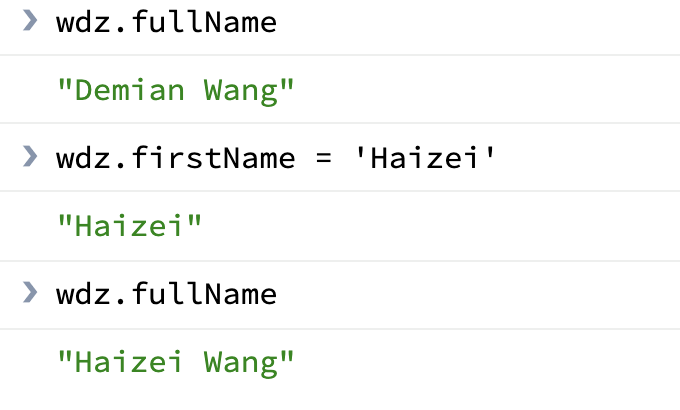
此时网页 ui 也发生了实时的变化：
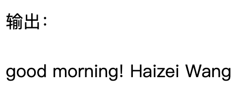
可见，computed 属性可以响应 observable 属性的变化。
值得一提的是，在 react 的 render 函数中，如果存在很多 props 的计算的话，可以使用 get 语法的形式将这部分逻辑抽离：
1 | get fullName() { |
这里的 fullName 和可计算属性类似，依据传入的 props 属性动态变化。
2.Observable State
通过在类属性前加上@observable，为该属性添加了可观察功能。
1 | import { observable } from 'mobx'; |
使用装饰器语法很简洁的使得 name 拥有了可观察的功能。
那么 Observable 有什么作用呢？
见以下代码：
1 | const greet = observable.box('good morning! '); |
我们为 greet 返回一个 observable 包装过的值，首先我们试着直接改变 greet 的值
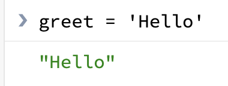
但是，此时网页 ui 没有实时变化：
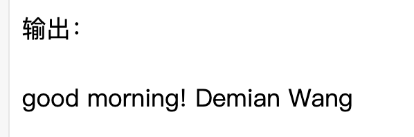
可见，原始类型在包装过之后，直接改变引用值不能触发页面动态更新，感兴趣的读者可以点击上面的链接打印出 greet 的属性，就能很直观的认识到 observable 的作用。
以下是简化版的 observable：
1 | // 简单的observable |
主要是使用 value 值存储原始类型，使用 get 获取 value 值，使用 set 更新 value 值。值得注意的是，在更新数据以前，set 方法会根据一定的配置，选择是否向全局发送更新事件，相应的一些 computed 的属性会接收到该事件。
3.Reactions
1 | const render = () => { |
当 observable 数据变化后，页面会自动更新 ui。
三、mobx 实战-实现一个 todoList
注：由于 create-react-app 创建的项目默认不能使用装饰器语法，所以笔者暴力的 eject 并安装了相应的 babel 配置。
以下是 todoList 的项目结构：
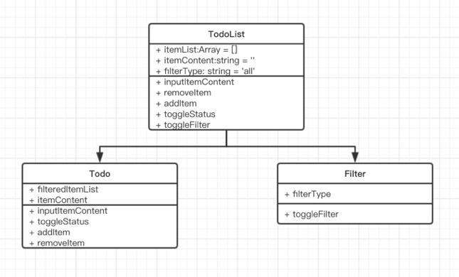
最终实现效果：
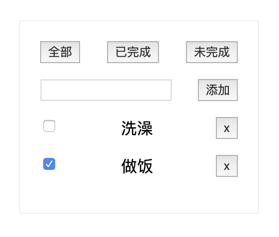
项目地址：todolist
当我们使用 mobx 维护状态时，store 不像 redux 那样是全局唯一的，我们可以细粒度地维护一个个数据模型。在中小型的项目中，mobx 的 store 轻便简洁，使用起来很顺滑。
项目中用到的 mobx 特性：
1.observable
主要维护 todolist 的基本状态：待办列表 todolist、新建待办的内容 itemContent 和当前筛选类型 filterType
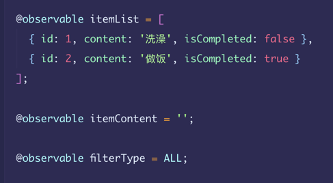
2.computed
根据当前筛选器的类型，返回对应的 todoList。
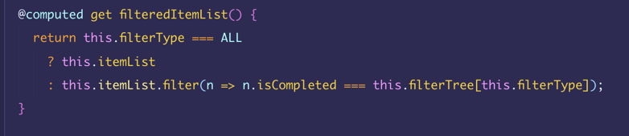
3.reactions
筛选器状态变化后，响应式地打印出当前筛选器的状态。
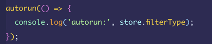
4.actions
点击筛选器后的状态切换和异步事件。这里需要使用 runInAction 包装异步函数，这样才可以完成响应式的更新数据。
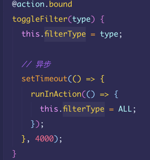
四、Mobx vs Redux
两者都是优秀的状态管理工具，都可以帮助开发者完成业务开发。所以抛开业务场景谈论工具优劣是无意义的，笔者这里只是简单列出两者的区别。
修改数据
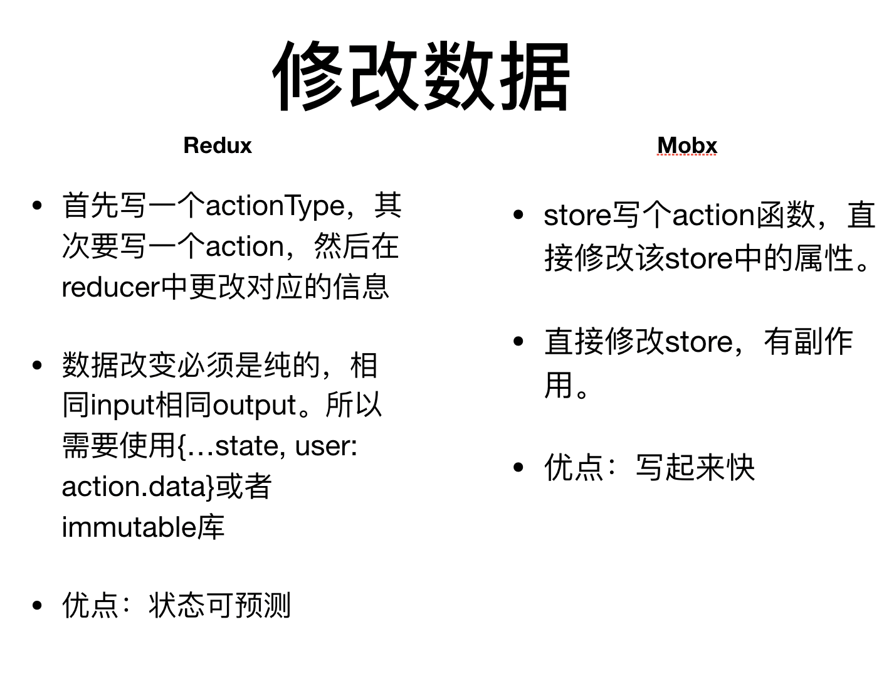
中间件
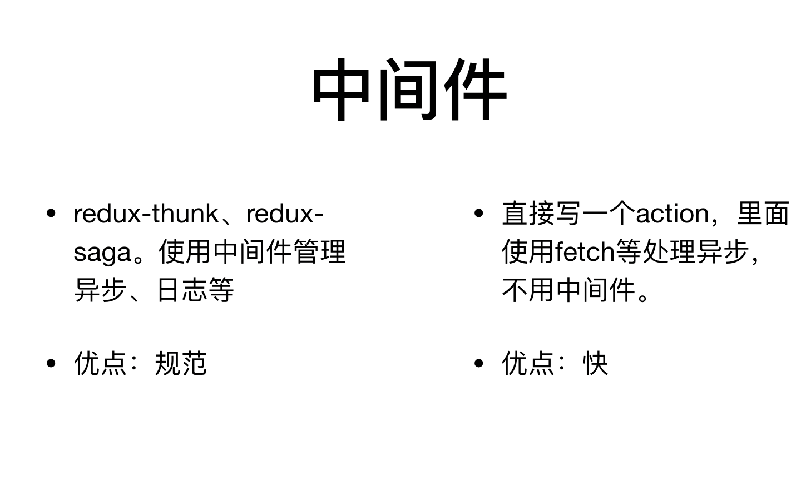
五、总结
笔者只是介绍了 mobx 的冰山一角，其作为一种响应式的状态管理库，在中小型项目中有着高效率的表现。响应式的写法、细粒度的 store 管理都体现了 mobx 的灵活性。